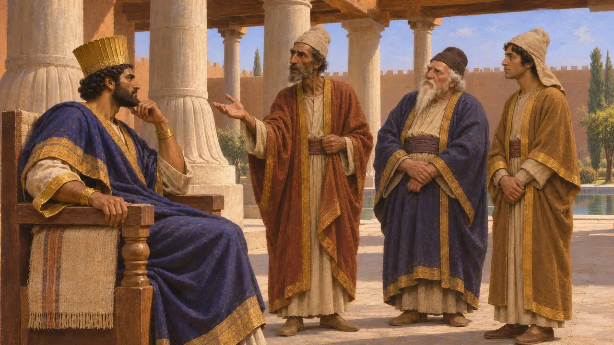
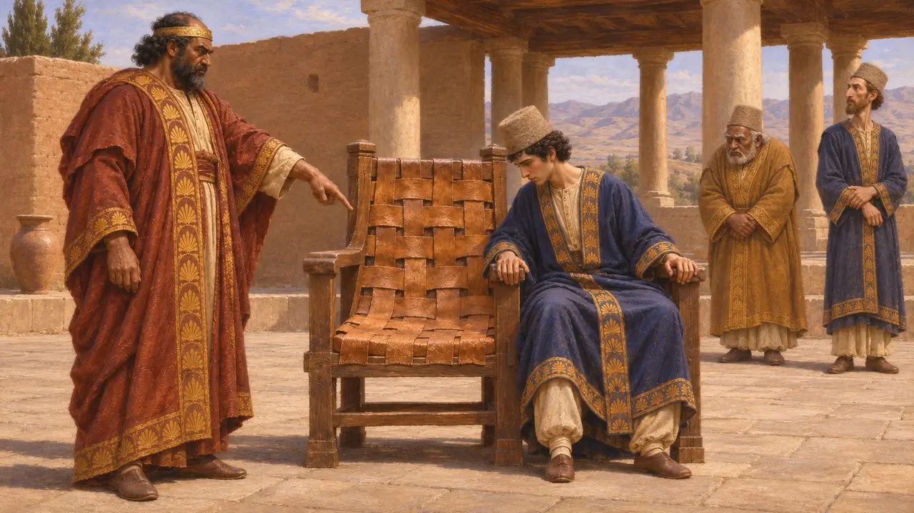
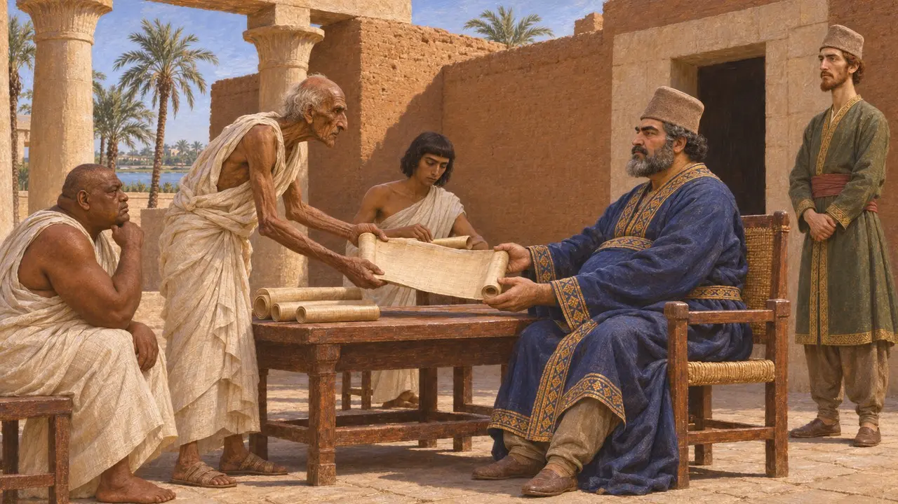

王家法官
在阿契美尼德帝国执行国王律法的法官，公元前6至前5世纪
王家法官由波斯人担任，受命审理案件，并以国王之名解释祖传律法。希罗多德说，他们终身任职，除非被判有不公之罪；巴比伦文献中也记有法官，所用的是借自波斯语的头衔，意为“持法者”。他们体现了大流士统治的核心主张：国王维护正义，他的律法将各地凝聚为一体。
游戏中： 游戏通过审判席建筑来呈现这一职位。迄今尚未发现此类波斯建筑；其名称呼应了希罗多德所讲的故事：一把座椅上蒙着一名贪赃法官的人皮。
以波斯语书写的国王律法
见于史载大流士的铭文将法律呈现为国王的恩赐与职责。他在贝希斯敦称，诸邦敬奉他的法律（古波斯语 data），遵行他的命令。在其陵墓铭文中，他声明自己不愿弱者受强者欺凌，也不愿强者受弱者欺凌。史家通常认为，法官正是将这类王家宣言付诸实践的官员。
DB §8; DNb
巴比伦文献中的“执法者”
见于史载波斯时期的巴比伦法律文书，包括尼普尔出土的穆拉树档案，用一个波斯语借词称呼法官，通常复原为 dātabara，意为“执法者”。这些人与原有的巴比伦法庭和神庙议事会并行工作，而非取而代之。这些文书表明，波斯的司法头衔在远离波斯本土之地日常通行，但对法官如何选任却着墨甚少。
A. Kuhrt, The Persian Empire: A Corpus of Sources, 2007; P. Briant, From Cyrus to Alexander, 2002

希罗多德论王家法官
古代记述希罗多德称，王家法官由选拔出的波斯人担任，除非被判犯有不义之罪，否则终身任职；他们审理案件，并解释祖传律法。冈比西斯询问自己能否娶亲妹妹为妻时，他们答道：没有任何律法允许此事，但另有一条律法规定国王可随心所欲。希罗多德还说，大流士曾因法官桑多克斯受贿而将其钉上十字架，随后权衡其往日功劳，又命人将他放下。
Herodotus 3.31; Herodotus 7.194

西萨姆涅斯之座
后世传说希罗多德记载，冈比西斯因王家法官西萨姆涅斯受贿而将其处死，并把他的皮割成条，用来铺覆审判席。随后，他任命死者之子奥塔涅斯为法官，嘱咐他牢记自己坐的是什么样的席位。这个故事被塑造成一则警戒腐败的训诫，无法与波斯史料相互印证。
Herodotus 5.25

一法还是多法
争夺中史学家争论统一的王家法律究竟在多大程度上存在。狄奥多罗斯将大流士列为埃及的立法者之一，一份托勒密时期的世俗体纸草也说他曾下令汇编埃及法律，但许多学者认为，波斯的统治是确认各地原有法律，而非强推一部统一法典。王家法官究竟是如希罗多德所暗示的那样组成固定的法官团，还是按需任命的官员，也尚无定论。
Diodorus 1.95; P. Briant, From Cyrus to Alexander, 2002; J. Wiesehöfer, Ancient Persia, 1996
来源
- Herodotus, Histories 3.31, 5.25, 7.194
- Darius I, Behistun inscription (DB) and tomb inscription (DNb)
- P. Briant, From Cyrus to Alexander, 2002
- A. Kuhrt, The Persian Empire: A Corpus of Sources, 2007
- J. Wiesehöfer, Ancient Persia, 1996
- Diodorus 1.95